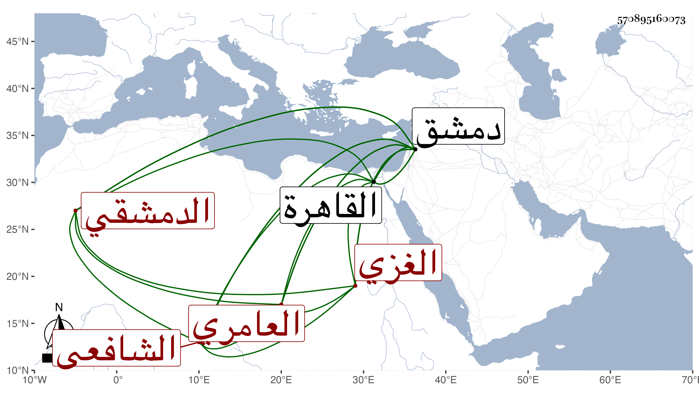

0902Sakhawi.DawLamic.ITO20230111-ara1.EIS1600.570895160073
Biography ID: 570895160073
1060
محمد بن أحمد بن عبد الله بن بدر بن مفرج بن بدر بن عثمان بن جابر رضى الدين أبو البركات بن الشهاب أبي نعيم العامري الغزي ثم الدمشقي الشافعي الماضي أبوه ووالد إبراهيم ورضي الدين ويعرف بالرضى بن الغزي . ولد في رمضان سنة إحدى عشرة وثمانمائة بدمشق ونشأ فيها فحفظ القرآن والمنهاج وغيرهما وأخذ عن والتقي بن قاضي شهبة وقدم القاهرة فأخذ عن شيخنا بقراءتي وغيرها وناب في القضاء بدمشق وصار بأخرة أحد أعيان الشافعية بها وأخذ عنه الطلبة وأفتى ودرس وعمل كتابا سماه بهجة الناظرين إلى تراجم المتأخرين من الشافعية المعتبرين أوقفني عليه بدمشق وسيرة للظاهر جقمق وقد رأيت شيخنا ينتقي منها ، وكان جيد الاستحضار مع سرعة حركة ونوع خفة . مات في يوم الخميس مستهل ربيع الأول سنة أربع وستين وصلي عليه عقب الظهر بجامع دمشق ثم بجامع تنكز ودفن بمقبرة الصوفية عند رجلي الشهاب بن نشوان بوصية منه رحمهما الله وإيانا .
